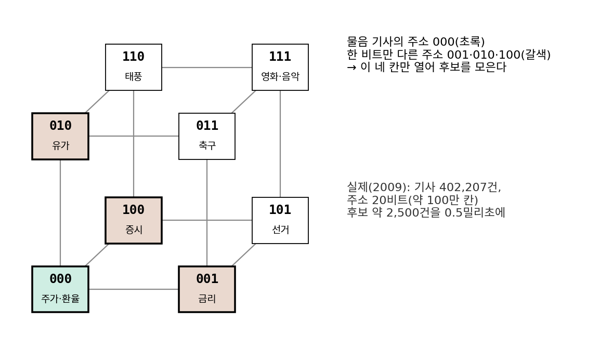
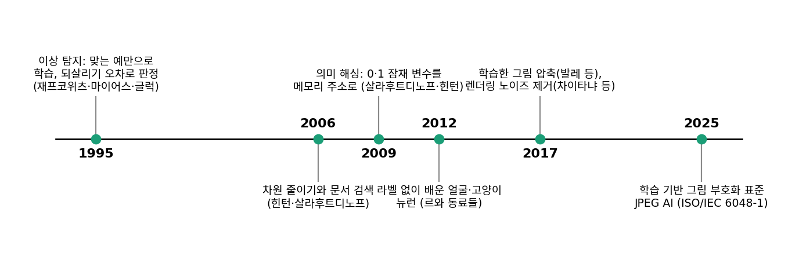
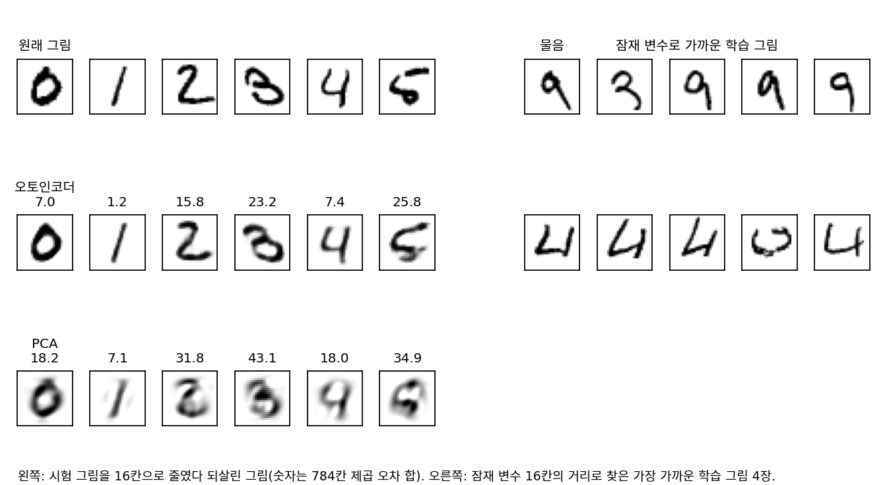
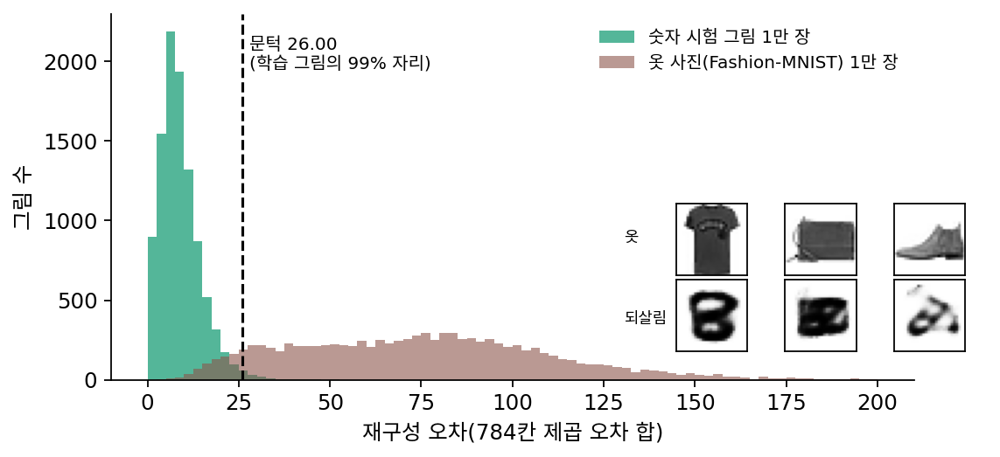
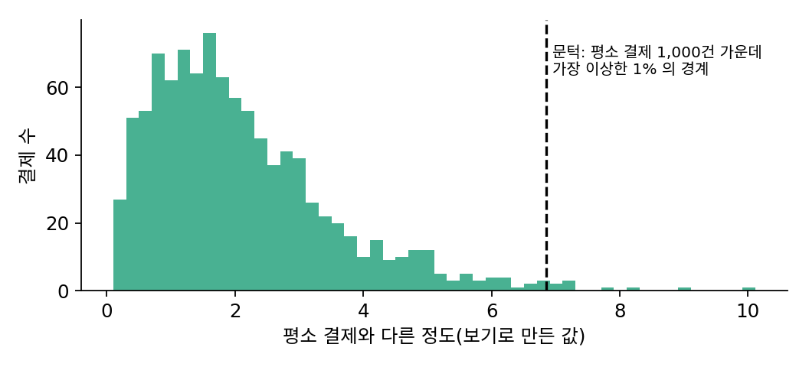
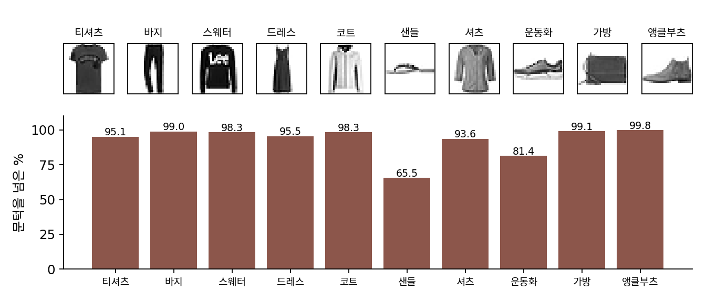
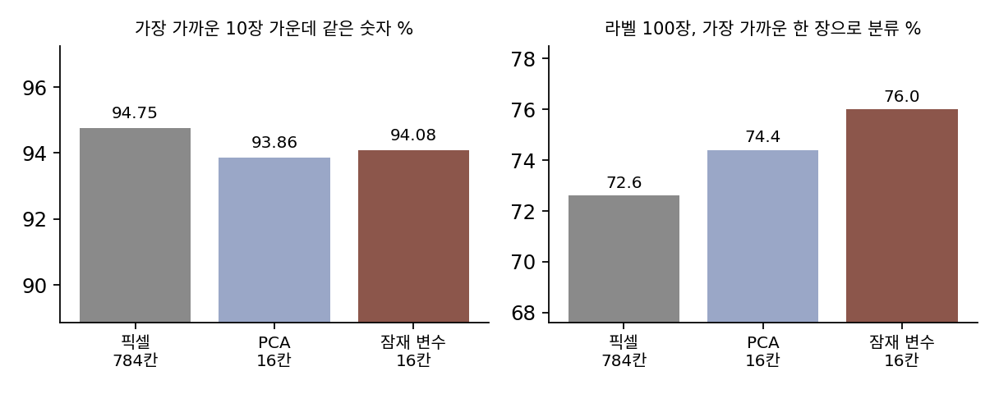

오토인코더의 응용: 줄인 칸으로 하는 일
지금까지 만든 오토인코더는 두 가지를 할 줄 안다. 그림 한 장을 숫자 몇 개로 줄였다가 되살리고, 망가진 그림을 받으면 원래 그림에 가깝게 고친다. 새 그림을 만들지는 못해도 이 두 솜씨만으로 쓸 데가 많아 보인다. 784칸 그림 대신 숫자 16개를 저장하거나 보내면 되고, 비슷한 그림을 찾을 때도 784칸 대신 16칸으로 거리를 재면 된다. 되살리기를 거꾸로 쓸 수도 있다. 숫자 그림으로만 배운 오토인코더에 옷 사진을 넣으면 제대로 되살리지 못할 텐데, 되살리지 못했다는 사실 자체를 「처음 보는 종류의 그림이 들어왔다」는 신호로 쓸 수 있을까?
역사: 되살리지 못하는 것을 신호로, 줄인 숫자를 주소로
오토인코더를 그림 만들기 말고 다른 일에 쓰는 생각은 일찍 나왔다. 1995년 재프코위츠(Nathalie Japkowicz), 마이어스(Catherine Myers), 글럭(Mark Gluck)은 해마의 기억 모델에서 출발한 시스템 HIPPO 를 국제 인공지능 학술대회(IJCAI)에 내놓았다. 분류기는 보통 맞는 예와 틀린 예를 함께 보고 둘을 가르도록 배우는데, 틀린 예를 모으기 어려운 일이 많다. 세 사람은 맞는 예만으로 오토인코더를 학습시키고, 잘 되살리지 못하는 입력을 틀린 예로 판정했다. 논문은 이 방법을 결정 트리 알고리즘 C4.5 와 보통의 신경망 분류기와 비교했다.
줄인 숫자로 비슷한 것을 찾는 생각은 2009년 살라후트디노프와 힌턴의 「의미 해싱(semantic hashing)」에서 눈에 띄게 다듬어졌다. 기사 한 건을 자주 나오는 낱말 2,000개의 개수로 적은 벡터를 오토인코더로 줄이되, 가운데 칸을 0과 1만 갖는 20칸으로 만들었다. 그러면 20칸의 0·1 이 그대로 컴퓨터 메모리의 주소가 된다. 아래 그림은 주소를 3비트로 줄인 모식도다.

로이터 기사 402,207건을 2²⁰(약 105만)개의 주소에 흩어 놓자, 물음 기사의 주소에서 비트 몇 개만 다른 주소들을 열어 보는 것만으로 비슷한 기사 약 2,500건의 후보가 0.5밀리초 만에 모였다. 그 후보 안에서 낱말 빈도로 순위를 매기는 데 10밀리초쯤 더 들었고, 같은 검색을 그때 널리 쓰던 근사 검색 방법(국소 민감 해싱)으로 하면 약 500밀리초가 걸렸다.
라벨 없이 배운 표현이 어디까지 쓸모 있는지는 2012년 르(Quoc Le)와 구글 동료들이 크게 시험했다. 인터넷에서 모은 200 × 200 그림 1,000만 장으로 연결이 10억 개인 9층 오토인코더를 컴퓨터 1,000대(CPU 코어 16,000개)에서 사흘 동안 학습했다. 그림마다 얼굴이 있는지 라벨을 한 번도 주지 않았는데 사람 얼굴에 반응하는 뉴런이 생겼고, 같은 신경망에는 고양이 얼굴과 사람 몸에 반응하는 뉴런도 있었다. 이 신경망이 배운 특징으로 ImageNet 의 2만 가지 물체를 가리게 하자 15.8%를 맞혀, 그전 최고 기록보다 상대적으로 70% 높았다.


틀린 예 없이 맞는 예만으로 판정기를 만든다는 게 신기해요. 분류기는 두 묶음을 다 봐야 경계를 긋잖아요.

공장에서 불량품을 골라내는 신경망을 만든다고 해 봐요. 불량품 사진은 얼마나 모일까요?

음, 공장이 제대로 돌면 불량은 드물겠죠. 게다가 불량 모양이 매번 달라서, 모아 둔 불량 사진에 없던 불량이 내일 나올 수도 있고요.

그럼 정상품만 잘 되살리도록 배워 두면, 어떤 불량이 오든 「잘 안 되살아난다」는 신호 하나로 걸리겠네요. 처음 보는 불량까지요.

그게 HIPPO 의 생각이에요. 그런데 처음 보는 것은 정말 모두 잘 안 되살아날까요? 숫자로만 배운 오토인코더로 직접 재 봐요.
줄이고, 찾고, 거르기
잠재 변수가 16칸인 오토인코더(784 → 128 → 64 → 16, 회색조 그림을 제곱 오차로 학습)를 그대로 가져와 네 가지 일을 시켜 보자. 새로 학습하는 것은 없다.
먼저 압축이다. 원래 그림은 칸마다 밝기 0 ~ 255 를 1바이트로 적어 784바이트다. 잠재 변수 16칸을 칸마다 256단계로 반올림해 1바이트씩 적으면 16바이트로, 49분의 1이 된다. 반올림한 잠재 변수에서 되살린 그림의 제곱 오차(784칸 합)는 시험 그림 평균 8.88로 반올림 전(8.87)과 거의 같다. 같은 16칸을 주성분 분석(PCA)으로 고르면 21.06이라, 굽은 모양까지 담는 오토인코더가 두 배 넘게 덜 틀린다.
다음은 검색이다. 시험 그림 1만 장을 하나씩 물음으로 삼아 학습 그림 6만 장 가운데 가장 가까운 10장을 찾고, 같은 숫자가 몇 장인지 센다. 픽셀 784칸으로 거리를 재면 94.75%, 잠재 변수 16칸으로 재면 94.08%다. 맞히는 비율은 거의 같은데, 거리 하나를 재는 데 드는 곱셈은 784번에서 16번으로 줄었다. 아래 그림의 왼쪽은 되살린 그림이고, 오른쪽은 잠재 변수로 찾은 가까운 학습 그림이다.

셋째로, 라벨이 적을 때다. 학습 그림 6만 장 가운데 숫자마다 10장, 모두 100장에만 라벨이 붙어 있다고 하자. 시험 그림마다 라벨 있는 100장 가운데 가장 가까운 한 장의 라벨을 따르게 하면, 픽셀 거리로는 72.6%, 잠재 변수 거리로는 76.0%를 맞힌다(100장을 열 번 새로 뽑은 평균). 오토인코더는 라벨을 한 번도 보지 않고 6만 장에서 획의 생김새를 배웠는데, 그 지도 위에서 잰 거리가 픽셀 거리보다 숫자를 조금 더 잘 가른다.
마지막은 거르기다. 이 오토인코더는 숫자 그림만 보았다. 학습 그림 6만 장의 재구성 오차는 중앙값이 7.88이고, 100장 가운데 99장이 26.00 아래다. 옷·신발·가방을 28 × 28 흑백으로 찍은 Fashion-MNIST 시험 사진 1만 장을 넣으면 재구성 오차의 중앙값이 74.15로 열 배 가까이 된다. 26.00을 문턱으로 삼아 이를 넘는 그림을 「숫자가 아니다」로 판정하면, 옷 사진은 92.6%가 걸리고 숫자 시험 그림은 0.98%만 잘못 걸린다. 아래 그림이 두 묶음의 재구성 오차다.

이렇게 평소의 데이터만으로 되살리기를 배운 뒤, 잘 되살리지 못하는 입력을 골라내는 일을 이상 탐지 (평소와 다른 입력을 골라내기 / anomaly detection)라 한다. 이상한 예를 하나도 모으지 않았는데 문턱 하나로 걸러 낸다는 점에서 HIPPO 와 같은 생각이다.
ML에서: 그림 압축 표준, 렌더링의 노이즈, 공장의 불량
2017년 발레(Johannes Ballé), 라파라(Valero Laparra), 시몬첼리(Eero Simoncelli)는 그림을 신경망으로 바꿔 반올림하고 다른 신경망으로 되돌리는 압축기를 처음부터 끝까지 함께 학습해, 같은 파일 크기에서 JPEG·JPEG 2000 보다 대체로 나은 화질을 보고했다. 2025년에는 학습 기반 그림 코딩 표준 JPEG AI(ISO/IEC 6048-1)가 국제 표준으로 나왔다. 같은 2017년 엔비디아의 차이타냐(Chakravarty R. Alla Chaitanya)와 동료들은 3차원 장면을 화소마다 빛의 경로를 하나만 뽑아 그린 노이즈 낀 화면을 디노이징 오토인코더로 고치고, 앞 프레임을 기억하는 연결을 더해 프레임 사이에 화면이 떨리지 않게 했다. 공장에서는 정상 제품 사진만으로 이상 탐지를 학습하는 일이 흔하고, 2019년 공개된 공업 검사 자료 MVTec AD(그림 5,354장, 결함 70가지 넘게)는 합성곱 오토인코더를 기준 방법의 하나로 시험했다.
문제 13. 훔친 카드를 한 번도 본 적 없는 카드사
카드사가 회원 한 명의 지난 결제 1,000건으로 「평소 결제」를 익히고, 결제마다 평소와 다른 정도를 점수로 매긴다. 지난 1,000건 가운데 가장 이상한 1%의 경계를 문턱으로 정하고, 문턱을 넘는 결제를 막는다. (가) 회원 본인이 평소처럼 한 달에 200번 결제하면 몇 번쯤 막히는가? (나) 문턱을 가장 이상한 0.1%의 경계로 올리면 무엇이 좋아지고 무엇이 나빠지는가? (다) 이 카드사는 훔친 카드의 결제를 한 번도 본 적이 없다. 그래도 훔친 카드를 막을 수 있는 이유는 무엇인가?

(가)는 평소 결제도 1%는 문턱을 넘게 정했으니까 200 × 0.01 = 2번이요. 한 달에 두 번쯤은 본인 결제가 막혀요.

(나)는 0.1%면 200 × 0.001 = 0.2번이니까 다섯 달에 한 번쯤이네. 대신 문턱이 높아지면 이상한 결제도 더 많이 통과하겠다.
(다)는요? 카드사가 아는 것은 이 회원의 평소 결제뿐이에요.
음, 도둑이 쓰는 법을 배운 게 아니니까… 도둑이 회원이랑 똑같이 쓰면 못 막겠네요. 동네 편의점에서 늘 사던 걸 사면요.
대신 새벽에 해외 쇼핑몰에서 큰돈을 쓰면, 이 회원의 평소 모습과 달라서 걸리고. 도둑을 배운 게 아니라 「이 사람답지 않음」을 재는 거니까, 처음 보는 수법이어도 평소와 다르기만 하면 걸려.

그래요. 숫자 그림으로만 배운 오토인코더가 옷 사진을 거른 것도 옷을 배워서가 아니었죠. 민준 학생 말대로, 평소와 비슷하게 생긴 이상한 것은 빠져나갈 수 있다는 점도 기억해 둬요.
문제 14. 빠져나간 샌들
숫자로만 학습한 오토인코더(잠재 변수 16칸)와 문턱 26.00(학습 그림 오차의 99% 자리)으로 옷 사진 1만 장을 거른다. 문턱을 넘은 비율은 종류마다 아래 그림과 같다. 가방 99.1%, 바지 99.0%, 앵클부츠 99.8%가 걸리는데 샌들은 65.5%, 운동화는 81.4%만 걸린다. 숫자 시험 그림에서는 1은 0.00%, 2는 3.00%, 8은 2.26%가 문턱을 넘는다. (가) 샌들이 가장 많이 빠져나간 이유는 무엇일까? (나) 재구성 오차가 문턱 아래라면 그 그림은 숫자라고 말할 수 있는가? (다) 숫자 2와 8이 1보다 자주 걸리는 것은 무엇을 뜻하는가?


(나)부터 하면, 문턱 아래면 숫자라고 봐도 되지 않아요? 숫자를 잘 되살리게 배운 오토인코더가 잘 되살렸으니까요.
샌들 사진 한 장을 떠올려 봐요. 바탕은 어떻고, 신발은 무엇으로 이루어져 있어요?
바탕은 거의 까맣고, 가는 끈 몇 줄이 지나가요. 해 봤는데, 샌들의 재구성 오차는 중앙값이 33.03으로 열 가지 가운데 가장 작아요. 운동화가 36.14로 그다음이고, 나머지는 65 ~ 96이에요.

아, 숫자도 까만 바탕에 가는 획 몇 줄이잖아요. 끈이 획처럼 생겼으니까 오토인코더가 끈을 숫자의 획으로 되살렸고, 오차가 작게 나온 거네요. 그럼 (나)는 아니에요. 잘 되살아났다는 건 「배운 그림과 비슷하게 생겼다」는 것이지 「숫자다」는 아니에요.
(다)는요? 숫자 시험 그림인데도 걸린 것들이에요.

1은 획 하나라서 16칸으로 거의 다 되살아나요. 오차 중앙값이 1.85예요. 2와 8은 획이 많고 고리도 있어서 오차 중앙값이 11.57, 11.80으로 크고, 꼬리가 문턱을 넘는 거고요. 숫자 종류마다 문턱을 넘는 비율이 다르네요.

문턱 하나로 정하면 원래 복잡하게 생긴 정상품이 더 자주 의심받는 거구나. 걸린 그림이 정말 이상한 건지, 그냥 되살리기 어려운 정상인지 재구성 오차 하나로는 못 가려요.

그래요. 재구성 오차는 「배운 것과 얼마나 다르게 생겼나」를 잴 뿐이에요. 생김새가 닮은 이상한 것은 빠져나가고, 생김새가 복잡한 정상은 걸려요.
문제 15. 16칸이 784칸보다 나은 일
잠재 변수 16칸 오토인코더(라벨 없이 학습)로 두 가지를 쟀다. 검색: 시험 그림마다 학습 그림 6만 장에서 가장 가까운 10장을 찾았을 때 같은 숫자의 비율은 픽셀 784칸 94.75%, PCA 16칸 93.86%, 잠재 변수 16칸 94.08%다. 라벨 적게: 숫자마다 10장만 라벨이 있을 때 가장 가까운 한 장으로 분류한 시험 정확도는 픽셀 72.6%, PCA 74.4%, 잠재 변수 76.0%다. (가) 검색에서 잠재 변수가 픽셀보다 조금 낮다면 굳이 잠재 변수를 쓸 이유가 있는가? (나) 라벨이 적을 때는 왜 잠재 변수가 픽셀보다 나은가? (다) 의미 해싱이 잠재 변수를 0과 1로 만든 것은 무엇을 얻으려는 것이었나?


검색은 픽셀이 94.75%로 제일 높네요. 그럼 검색엔 잠재 변수를 쓸 이유가 없겠어요. 줄이면 정보가 빠지는 거니까, 거리도 픽셀로 재는 게 언제나 제일 정확할 거예요.
학습 그림이 6만 장이 아니라 60억 장이고, 물음이 1초에 만 번 들어온다고 해 봐요. 무엇이 달라질까요?

아… 거리 하나에 곱셈이 784번이면 물음 하나에 4조 7천억 번이네요. 16칸이면 49분의 1이고요. 정확도를 0.7%포인트 내주고 일을 49분의 1로 줄이는 거면 쓸 만하네요. 저장할 곳도 49분의 1이고요.

그런데 (나)에서는 오히려 잠재 변수가 이기잖아. 정보가 빠지기만 했다면 이럴 수 없을 텐데.
라벨 100장으로 분류할 때, 픽셀 거리는 무엇을 가깝다고 쳐요?

칸마다 밝기가 비슷한 그림이요. 같은 3이라도 오른쪽으로 조금 비켜 쓰면 겹치는 칸이 줄어서 멀어지고요. 잠재 변수는 6만 장을 되살리며 획의 생김새를 정리해 둔 지도라, 숫자의 모양이 비슷한 그림끼리 가까워요. 빠진 건 칸마다의 자잘한 밝기 차이고, 남은 건 생김새네요. 라벨이 적을수록 그 지도가 도움이 되고요.
(다)는 아까 그 계산이네. 0과 1로 만들면 그 자체가 주소라서 거리를 재지 않고 주소 몇 개만 열어 보면 돼. 곱셈을 줄이는 게 아니라 아예 안 하는 거지.
도서관에서 책을 찾을 때 책장을 다 훑지 않고 청구기호로 서가 하나만 가는 거랑 비슷해요. 청구기호가 비슷한 책은 주제도 비슷하니까 그 둘레만 보면 되고요.